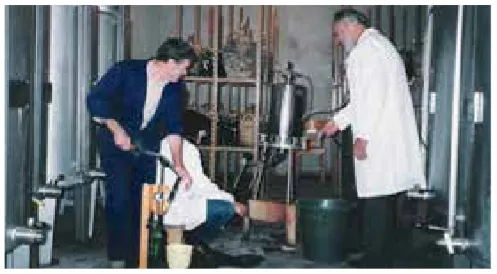
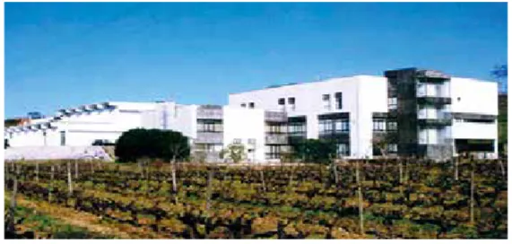

Kapitel 1 · Kurzer Überblick über die Geschichte des Weinbaus in Portugal
Portugals Beitritt zur Europäischen Gemeinschaft
Die Verwaltung des Landwirtschaftsministeriums hatte damals wegen der ständigen Personalwechsel infolge wechselnder politischer Führung andere interne Probleme zu lösen als die des professionellen Weinbaus. Eine freiwillige Initiative führte zur fruchtbaren Zusammenarbeit weinbauorientierter Techniker und Wissenschaftler aus verschiedenen regionalen und zentralen Behörden. Sie schlossen sich zu einem nationalen Netzwerk der Rebenzüchtung zusammen (RNSV – Referencial Nacional de Certificação de Sustentabilidade do Sector Vitivinícola – Nationaler Katalog zur Nachhaltigkeitszertifizierung im Weinbausektor) und unterwarfen sich eigenen, modernen Regeln, getragen vom individualistischen Selbstverständnis einer Nation mit großer Tradition als Entdecker neuer Länder und Kontinente. Es entstand ein groß angelegtes Programm zur Erkundung von Rebsorten und zur Klonenselektion. Es beruhte auf der vorausschauenden Strategie, der Erhaltung der Biodiversität innerhalb der einzelnen Rebsorten Vorrang zu geben, und führte zur Entwicklung eines weltweit einzigartigen polyklonalen Systems der Rebenzüchtung.
Als führender Importeur portugiesischer Weine nach Deutschland im Jahr 1969 erkannte der Autor dieses Buches kurz nach seiner Übersiedlung nach Portugal 1974, dass Weinbau, Kellertechnik und Rebsortenpolitik in Portugal nicht den Qualitätserwartungen der Märkte in der Europäischen Gemeinschaft entsprachen, und gründete seine eigene Rebschule, Viveiros PLANSEL S.A. 1982 kam Bundeskanzler Helmut Kohl nach Portugal und bestätigte, dass die Europäische Gemeinschaft den Beitritt Portugals zur Europäischen Wirtschaftsgemeinschaft vorbereiten werde. Damals legte Deutschland ein eigenes Programm für Innovationen im portugiesischen Agrarsektor während der Beitrittsphase zum Gemeinsamen Markt auf. Viveiros PLANSEL S.A. war an einer Investition der staatlichen deutschen Förderbank Kreditanstalt für Wiederaufbau (KfW) in Höhe von 3 Millionen Euro beteiligt, in einem Projekt zum Technologietransfer vom Forschungszentrum für Rebenzüchtung der Hochschule Geisenheim. Die Zusammenarbeit bei der phytosanitären Selektion wurde in Protokollen mit dem wissenschaftlichen Zweig des staatlichen portugiesischen Pflanzenschutzes, der Estação Agronómica Nacional – EAN in Oeiras unter Prof. O. A. de Sequeira (zuständig für die phytosanitäre Selektion), sowie mit der Önologie-Abteilung der Universität Évora unter Eng. Francisco Colaço do Rosário festgelegt.

Die Wirkung der Forschung wurde maximiert, indem man beide Programme zur Sortenverbesserung gleichzeitig durchführte. Die wichtigen Rebsorten Portugals wurden intensiven und umfangreichen Eignungsstudien unterzogen, aus denen zertifizierte Handelsprodukte hervorgingen: Klone, die den damaligen mengenmäßigen Zielen entsprachen.
1981 begann das Nationale Projekt zur Ampelografie und zu den Synonymen der Rebsorten, das die nationale Ampelografie völlig umwälzte und die Voraussetzungen dafür schuf, dass wir heute fast alle unsere Sorten kennen. Dieses Projekt ermöglichte den Aufbau ampelografischer Sammlungen in den wichtigsten Weinbauregionen des Landes, die bis heute genutzt werden. Aus ihm gingen Rebsortenkataloge für die wichtigsten nationalen Weinbauregionen sowie die „Nationale Ampelografische Sammlung“ (CAN) hervor, die sich in Dois Portos an der nationalen Forschungsstation für Weinbau und Önologie (EVN) befindet.
1999 begann an der staatlichen (INIA) Rebforschungsstation in Dois Portos der Einsatz von Mikrosatelliten zur molekularen Profilierung portugiesischer Rebsorten, mit der Analyse von 49 Sorten anhand von 11 Mikrosatellitenmarkern (Lopes et al., 1999). Mehrere zuvor erkannte Synonyme wurden bestätigt. Es folgte die Mikrosatelliten-Charakterisierung der 341 in Portugal offiziell zur Weinbereitung zugelassenen Rebsorten mit den 6 Mikrosatelliten, die im Rahmen des europäischen Projekts GENRES 081 untersucht und von der OIV als molekulare Marker für Vitis anerkannt wurden. Im Lauf dieser Arbeiten wurden einige Synonyme aufgedeckt.

Portugal bringt derzeit gut koordinierte Teams in das International Grape Genome Program (IGGP) ein und beteiligt sich in den Bereichen molekulare Marker, genetische Kartierung und Transkriptom-Analyse, mit besonderem Schwerpunkt auf der Reaktion auf verschiedene Arten von abiotischem Stress sowie der Entwicklung von Arrays.
Die Rahmenbedingungen der Weinerzeugung in Portugal änderten sich endgültig mit der Abschaffung der sogenannten garantie de bonne fin (bezahlte Destillation) und dem Beitritt zur Europäischen Union 1986. Die Mehrheit der Traubenerzeuger geriet dadurch in Not. Die bewirtschaftete Rebfläche halbierte sich in weniger als zwei Jahrzehnten.
Nach der Aufnahme Portugals in den Gemeinsamen Markt folgten Sonderprogramme zur beruflichen Weiterentwicklung wie PEDAP (1987–90), PAMAF (1991–94) und zwei AGRO-Projekte (1995–2004). Die Fördermittel für diese Projekte gaben den Innovationsbemühungen im Privatsektor erheblichen Auftrieb. Diese Programme wurden zusammen mit Forschungsarbeiten staatlicher oder universitärer Institute umgesetzt, um die Probleme eines Erzeugersektors zu überwinden, der sich ausländischer Konkurrenz gegenübersah. Zunächst wurden Besuche von Winzern aus der Neuen Welt, die Erfahrung mit der Weinbereitung in heißem Klima hatten, in Portugal gut aufgenommen. Später vermittelte ein professionelles Ausbildungssystem einer Elite nationaler Önologen das Wissen moderner Kellertechnik. Innerhalb weniger Jahrzehnte wurden die Weinberge auf hochwertige Betriebe mit autochthonen Reben umgestellt, und eine moderne Vinifikation förderte typische und unverwechselbare Qualität. Einige der modernsten und erfolgreichsten Kellereien Europas wurden gebaut und entwickelt. Mit dem neuen Jahrtausend stieg der Phönix des portugiesischen Weinbaus wieder aus der Asche und sicherte sich mit sortentypischen, gut gereiften Weinen internationale Anerkennung.
Die aktuelle Herausforderung: